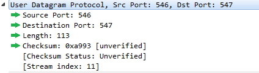
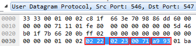
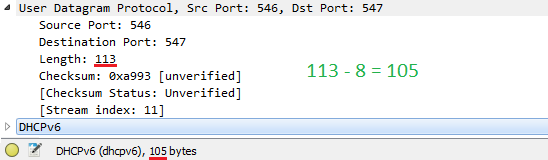
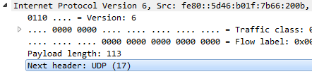
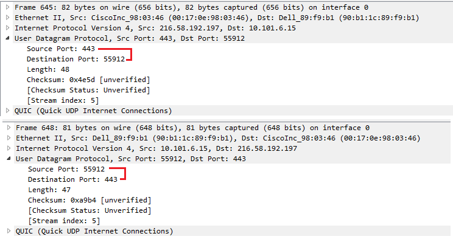

Wireshark Lab - UDP
- Select one UDP packet from your trace. From this packet, determine how many
fields there are in the UDP header. Name these fields.
There are 4 fields in a UDP packet: Source Port, Destination Port, Length, and Checksum.

- By consulting the displayed information in Wireshark’s packet content field for
this packet, determine the length (in bytes) of each of the UDP header fields.
Each header field is 2 bytes, for a total of 8 bytes.

- The value in the Length field is the length of what? Verify your claim with your captured UDP packet.
The Length field is the length of all the packet's enclosed data plus the header length, so it will always be the length of the enclosed data + 8.

- What is the maximum number of bytes that can be included in a UDP payload?
As Length is a 16-bit (2-byte) number, a UDP packet must be 2^16-1 bytes at maximum. Becuase there are always 8 header bytes, a UDP payload must contain no more than 2^16-1-8, or 65,527 bytes.
- What is the largest possible source port number?
A port must also be a 16-bit number, so there will be 2^16 possible port numbers. Starting at port 0 gives us a maximum of 2^16-1, or 65535, as the maximum port number.
- What is the protocol number for UDP? Give your answer in both hexadecimal and
decimal notation. To answer this question, you’ll need to look into the Protocol
field of the IP datagram containing this UDP segment.
The UDP protocol number is 17.

- Examine a pair of UDP packets in which your host sends the first UDP packet and
the second UDP packet is a reply to this first UDP packet.
Describe the relationship between the port numbers in the two packets.
The port numbers, like the Source & Destination addresses, have switched places.
